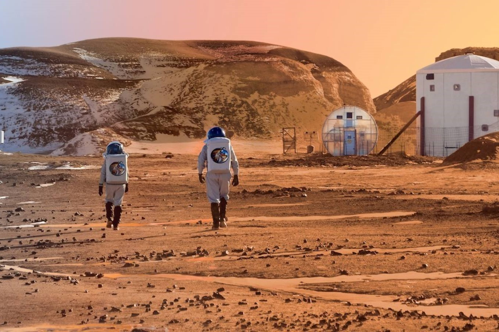

Recibiu o seu nome en homenaxe ao deus da guerra da mitoloxía romana (Ares na mitoloxía
grega), e tamén é coñecido como «o planeta vermello» debido á aparencia avermellada que lle confire o
óxido de ferro predominante na súa superficie. Marte é o planeta interior máis afastado do Sol. É un planeta
telúrico cunha atmosfera delgada de dióxido de carbono, e ten dous satélites pequenos e de forma irregular,
Fobos e Deimos (fillos do deus grego), que poderían ser asteroides capturados similares ao asteroide troyano
(5261) Eureka. As súas características superficiais lembran tanto aos cráteres da Lúa como aos vales,
desertos e casquetes polares da Terra.
O período de rotación e os ciclos estacionais son similares aos da Terra, xa que a inclinación é o
que xera as estacións. Marte alberga o Monte Olimpo, a montaña e o volcán máis grande e alto coñecido no
sistema solar, e os Vales Marineris, un dos maiores canóns do sistema solar. A chaira conca Boreal
no hemisferio norte cobre o 40% do planeta e pode ser característica dun xigantesco impacto. Aínda que
en aparencia podería parecer un planeta morto, non o é. Os seus campos de dunas seguen sendo arrolados polo
vento marciano, os seus casquetes polares cambian coas estacións e mesmo parece que hai algúns pequenos
fluxos estacionais de auga.
Marte pódese observar facilmente a primeira ollada desde a Terra, así como a súa coloración avermellada. A súa
magnitude
aparente alcanza −2.97, e é soamente superada por Xúpiter, Venus, a Lúa e o Sol. Os telescopios ópticos
terrestres están normalmente limitados a resolucións de aproximadamente 300 km (190 millas) de distancia,
cando a Terra e Marte están máis próximos, debido á atmosfera terrestre.
Marte forma parte dos planetas superiores á Terra, xa que a súa órbita nunca atravesa a da Terra
ao redor do Sol. As súas fases (porción iluminada vista desde a Terra) están pouco marcadas, feito que é fácil
de demostrar geométricamente. Considerando o triángulo Sol-Terra-Marte, o ángulo de fase é o que forman o
Sol e a Terra vistos desde Marte; leste alcanza o seu valor máximo nas cuadraturas cando o triángulo STM é
rectángulo na Terra. Para Marte, este ángulo de fase non é nunca maior de 42°, e o seu aspecto de disco giboso
é análogo ao que presenta a Lúa 3,5 días antes ou despois da Lúa chea. Esta fase, visible cun
telescopio de afeccionado, non puido ser vista por Galileo, quen soamente supuxo a súa existencia.